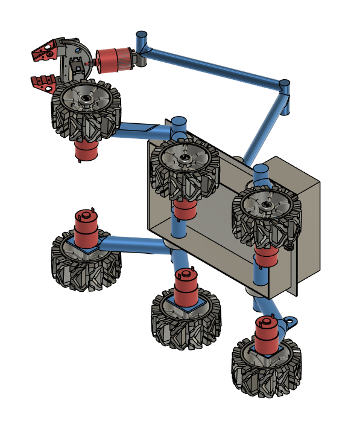

As-Built Joint
Applies a mechanical relationship to components that are already in their correct locations. It defines motion without moving the parts into alignment.
Focus question: How can we make an already-positioned rover function using rigid and revolute As-Built Joints?
Applies a mechanical relationship to components that are already in their correct locations. It defines motion without moving the parts into alignment.
Use Rigid when two parts must move as one. Use Revolute when one part must rotate around a specified axle or pivot axis.
These names were recovered from Rover Assembly Practice.f3d, the instructor's supplied model. Fusion may append occurrence numbers (for example, Wheel:1) to repeated components. Do not rename parts until you understand the assembly structure.

.f3d model, not a generic example.| Component names from file | Likely role in joint plan |
|---|---|
Base Body | Primary frame reference; ground the stationary base component. |
Wheel (six visible) | Revolute at each wheel hub; six independent wheel-rotation checks. |
Motor | Motor housing is rigid to its mounting leg or bracket; wheel rotates relative to the support. |
Rear Legs, Rear Legs 2, Leg Shaft | Suspension support and shaft parts. Determine which connections are rigid and which form real pivots before adding a joint. |
Payload Box | Rigid to its intended frame mount. |
Arm Base, Arm, Gripper Wrist | Articulated arm subsystem; identify pivot axes for the optional extension. |
GripperMechanism, Servo MG966R_Predeterminado, holder and small hardware | Additional gripper and servo parts; keep fixed housings rigid and identify only genuinely articulated mechanisms as pivots. |
Important distinction: Component names and six wheels are confirmed from the provided archive and preview. The design names identify the parts, while pivot origins and clearance-limited angles must be established in Fusion using the procedures in this lesson.
Use Design → Solid → Assemble → As-Built Joint. Select two existing components. For wheels, choose Revolute, identify the hub center and orient the rotation axis down the axle. For fixed mounts, choose Rigid.
Autodesk: Create an As-Built Joint ↗Use Preview Motion before accepting and Animate Joint from the Joints folder for verification. For joints with physical stops, also use Edit Motion Limits to define allowable minimum and maximum positions.
Rigid: zero movement between parts. Revolute: rotation about one chosen axis. A rigid motor housing can support a revolute wheel without becoming a moving body itself.
Autodesk: Joint Relationships Tutorial ↗Do not substitute Move, Align, standard Joint or a rigid group for the required As-Built Joint demonstrations.
Starting condition: every component is already positioned. Each student opens Rover Assembly Practice.f3d, saves their own copy and creates As-Built Joints—not standard Joints, Move commands or new geometry. Expand the relevant component in the Browser and use Select in Canvas to distinguish repeated occurrences.
Base Body. This is the stationary reference. Right-click its top-level occurrence and choose Ground. Never ground a wheel, leg or arm.Payload Box → Base Body: Create a Rigid As-Built Joint at the frame where the gray electronics box is mounted. Test: selecting and dragging the box must not move it separately from the chassis.ELECTRIC BOX DHAKNA → Payload Box: Create a Rigid As-Built Joint for the gray box cover. Test: the lid cannot move relative to the box.Leg Shaft → Base Body: Use a Revolute As-Built Joint at the blue upright suspension pivot. Put the origin at the center of the cylindrical shaft; align the revolute axis along the shaft, not across the leg.Rear Legs → their matching Leg Shaft: Create a Rigid As-Built Joint at the shaft-to-leg attachment. The leg and shaft form one rotating support; the shaft pivots relative to the chassis.Rear Legs 2 → their matching Leg Shaft: Repeat the Rigid As-Built Joint for the second rear-leg structure. Use the occurrence that occupies the same side and pivot as the leg being constrained.Selection rule: for repeated leg and shaft occurrences, first hide and show the specific part in the Browser. Join the components at the same physical pivot, never arbitrary identically named occurrences.
Label the wheels by their positions: left-front (LF), left-middle (LM), left-rear (LR), right-front (RF), right-middle (RM), right-rear (RR). Treat the gripper end as the rover's front.
| Wheel position | Required As-Built Joints |
|---|---|
| LF | Motor housing to matching blue leg mount: Rigid. Wheel to its matching motor output/axle support: Revolute centered on the wheel hub. |
| LM | Motor housing to matching blue leg mount: Rigid. Wheel to its matching motor output/axle support: Revolute centered on the wheel hub. |
| LR | Motor housing to matching blue leg mount: Rigid. Wheel to its matching motor output/axle support: Revolute centered on the wheel hub. |
| RF | Motor housing to matching blue leg mount: Rigid. Wheel to its matching motor output/axle support: Revolute centered on the wheel hub. |
| RM | Motor housing to matching blue leg mount: Rigid. Wheel to its matching motor output/axle support: Revolute centered on the wheel hub. |
| RR | Motor housing to matching blue leg mount: Rigid. Wheel to its matching motor output/axle support: Revolute centered on the wheel hub. |
Test each wheel separately: Drive/Animate its revolute joint one complete revolution. The wheel must spin without wobbling, separating from its shaft or moving the red motor housing. Do not add angular limits to these six continuously rotating wheel joints.
Arm Base → front chassis support (Base Body): Create a Revolute As-Built Joint centered on the arm's mounting pivot. This controls the first arm rotation.Arm → Arm Base: Create a Revolute As-Built Joint at the shoulder hinge joining the two arm sections. Rotate about the pin/cylinder axis, not the arm's long dimension.Gripper Wrist → Arm: Create a Revolute As-Built Joint at the cylindrical wrist connection. The end effector should turn without separating from the arm.Some of these named parts are nested within imported subassemblies. Make the joints between the matching physical components, not between the overall assembly folder and a small part.
Gripper Motor Cup → Gripper Wrist: Make a Rigid As-Built Joint between the mounting cup and the wrist.Servo MG966R_Predeterminado → Gripper Motor Cup: Make a Rigid As-Built Joint between the servo housing and its cup. The servo case must not rotate or fall out during wrist motion.holder → gripper Base: Make a Rigid As-Built Joint that holds the servo's fixed bracket to the stationary gripper base.Base → Gripper Wrist: Make a Rigid As-Built Joint so the gripper's fixed structure follows the wrist.GripperMechanism → gripper Base: Make a Revolute As-Built Joint at the mechanism hinge or servo output pivot. This is the movable grasping mechanism, not the stationary servo housing.gripper → GripperMechanism: Make a Rigid As-Built Joint so the gripper geometry follows the moving mechanism. Treat the supplied gripper as one tool component; this activity does not require remodeling it into independently actuated fingers.Base Body, electronics box and cover remain fixed.GripperMechanism moves within its opening/closing limits.Do not submit an assembly that only looks correctly positioned. A screenshot alone does not prove that components are connected or that the motion is constrained.
Teacher design note: These joint pairs define the required classroom motion model based on the named components and preview in the supplied Fusion archive. The archive does not provide tested pivot axes, collision-free end angles or independent gripper-finger components. Students establish each exact origin from its cylindrical hardware and determine the safe range using the measured limit protocol below.
Why: A revolute joint controls the axis of rotation. A minimum and maximum Motion Limit prevent the joint from moving outside its allowed range. Wheels are continuously rotating and need no angular stop; suspension pivots, arm hinges and the gripper have bounded travel. Autodesk Fusion does not automatically detect all collisions when limits are set.
| Moving connection | Limit requirement |
|---|---|
Leg Shaft / Base Body pivots | Measured ± range; investigate to 30° in each direction |
Arm Base / chassis | Measured ± range; investigate to 45° in each direction |
Arm / Arm Base | Measured ± range; investigate to 45° in each direction |
Gripper Wrist / Arm | Measured ± range; investigate to 45° in each direction |
GripperMechanism / gripper Base | Determine closed and open endpoints from physical interference; cap search at 45° each way |
Six Wheel revolutes | Unlimited 360° rotation — no Min or Max |
| Rigid joints (motors, box, cover, hardware) | No limits — relative motion is already locked |
For each limited joint, record: name, Minimum, Maximum, and one sentence explaining which physical obstruction would prevent further travel.
Critical distinction: ±30° and ±45° are maximum search envelopes for this lesson, not verified joint capabilities of the uploaded rover. Real collisions or stops always take priority; students must stop earlier if needed.
Autodesk: Joint Motion Limits ↗Imagine two parts are already in the right place. Select the relationship needed between them.
The rover components are already in the correct locations. An As-Built Joint adds the motion relationship without repositioning them.
The stationary chassis or frame that serves as the assembly reference—not the freely rotating wheels.
Every intended rotating part turns about its correct axis; fixed hardware remains connected; the grounded frame does not drift; bounded joints stop at realistic endpoints.
Not when the wheels must rotate continuously. Limits belong on mechanisms with physical end stops, such as some suspension and arm pivots.
No. A limit controls the range of one joint. Check real part clearance throughout the permitted motion.
Apply earlier work with joint types and limits to a realistic rover assembly, then inspect the mechanism before moving to the rocket design project.
Starting file: Rover Assembly Practice.f3d. Use your instructor's already-positioned rover. Your work is to complete its joint relationships and prove physically realistic motion. Do not remodel, translate or rearrange the original components.
Base Body. Rigid-connect Payload Box and ELECTRIC BOX DHAKNA to their corresponding mounts.Leg Shaft turns relative to the chassis; connect Rear Legs and Rear Legs 2 rigidly to their matching rotating shafts. Measure and enter physical travel limits.Arm Base, Arm and Gripper Wrist at their physical axes; set and test min/max travel limits.Gripper Motor Cup, Servo MG966R_Predeterminado, holder and gripper Base to their specified supports. Create the GripperMechanism revolute joint and attach the named gripper component rigidly to that mechanism. Test open and closed limits.Recommended pacing: 3–4 class meetings. Stage A–C first, followed by arm/gripper work and final verification. All listed systems are required—there is no optional or unfinished gripper section.
Upload each item to the IED Lesson 3.4 Google Classroom assignment:
Grade standard: The complete rover must be correctly constrained and mechanically plausible. Leaving arm or gripper parts unjoined does not satisfy the requirements.
Return to the Unit 3 lesson map and project sequence.
Return to the IED course hub.
Name: __________________________ Period: ______ Date: __________
Real file: Rover Assembly Practice.f3d • Six wheel revolute joints required.
Fusion (.f3d), six labeled screenshots and limit table (.pdf), 30–60-second motion recording (.mp4), and three-sentence explanation.